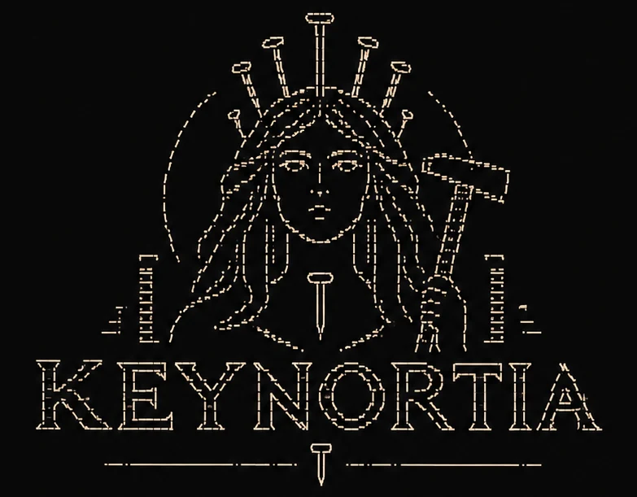
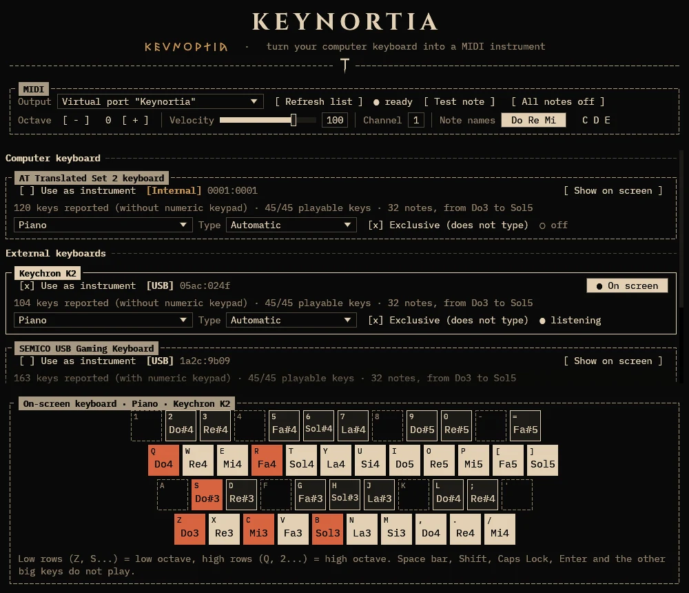
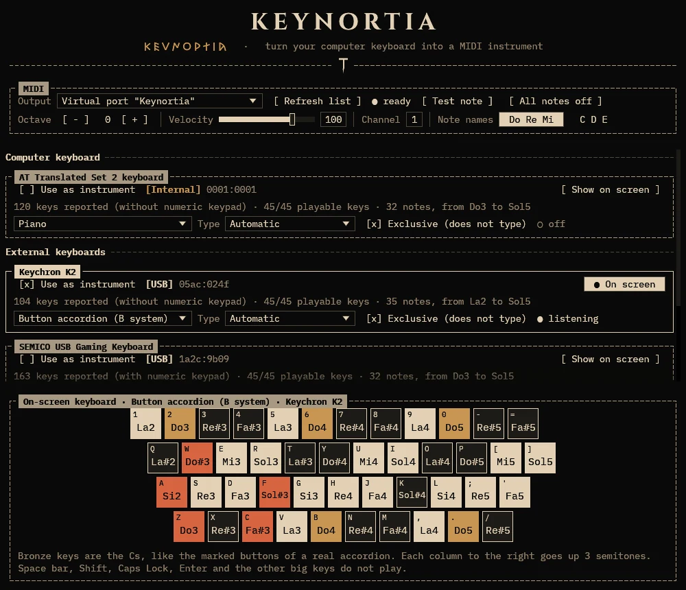

Turn your computer keyboard into a MIDI instrument.
A piano or a button accordion on the small keys, with a different instrument for every keyboard. Keynortia sends MIDI notes to any synthesizer, sampler, plugdata patch or DAW you like, exactly as if you were playing a MIDI keyboard.
One keystroke at a time. One note at a time. Fate is in your hands.
Linux, Windows and macOS. Free and open source, MIT license.
Your keyboard is the instrument. Press keys on the digits, QWERTY, ASDF and ZXCV rows, or click the keys below. If nothing happens, click the page once first.
Your browser is holding the sound back. Click or tap the page once and play again.
The sound here comes from a small synthesizer built into this page. The program itself makes no sound: it sends MIDI notes to the synthesizer you choose. Keys are identified by position, not by the letter printed on them, so the layouts are the same on AZERTY, QWERTZ or Dvorak.


The keyboards in the screenshots are made up.
Download the file for your system from the Releases page. SHA256SUMS has the checksum of each file.
keynortia_<version>-1_amd64.deb (arm64 on ARM)
sudo apt install ./keynortia_*_amd64.debkeynortia-<version>-1.x86_64.rpm (aarch64 on ARM)
sudo dnf install ./keynortia-*.x86_64.rpmkeynortia-<version>-1-x86_64.pkg.tar.zst
sudo pacman -U keynortia-*-x86_64.pkg.tar.zstkeynortia-<version>-linux-x86_64.tar.gz (aarch64 on ARM)
tar xf keynortia-*-linux-x86_64.tar.gz && cd keynortia-*-linux-x86_64 && ./keynortiakeynortia-<version>-windows-x86_64.zip
Extract the zip anywhere and double-click keynortia.exe. Windows may say “Windows protected your PC”, because the program is not code-signed: click More info, then Run anyway.
Keynortia-<version>-macos.dmg (Apple silicon and Intel)
Open the .dmg and drag Keynortia onto Applications. The first time, macOS blocks apps that are not notarized: open System Settings → Privacy & Security and click Open Anyway. When you switch a keyboard on, allow Input Monitoring.
Linux keeps the input devices for members of the input group. Add yourself to it, then log out and back in (or reboot). If you forget, Keynortia tells you, with this very command, when you start it.
sudo usermod -aG input $USERKeynortia sends MIDI. A synthesizer makes the sound. Pick the Output in the program, then press Test note: you should hear a middle C.
Keynortia. Pick your synthesizer's port in the Output list, or connect the virtual port to it with your DAW, qpwgraph or aconnect. FluidSynth with a General MIDI soundfont is a quick one to try.Keynortia among the MIDI inputs of the program that makes the sound.Keynortia is at version 0.1. Linux is the main platform and the one that has been tried on real keyboards. Windows and macOS are new: they are built and tested automatically on every change, but they have seen little use on real machines, above all the exclusive mode. If something does not work, please open an issue and say which system, which keyboard and what the window says.
| Linux | Windows | macOS | |
|---|---|---|---|
| Tells the keyboards apart | yes | yes | yes |
| Exclusive mode | yes, always | yes, with a keyboard hook | best effort: macOS may refuse |
| Virtual MIDI port | yes | no, use loopMIDI | yes |
| Set up once | join the input group | loopMIDI, to reach other programs | allow Input Monitoring |
If your only keyboard is the one you are playing, keep the mouse at hand. With Exclusive on, the keys of that keyboard cannot type anything else. Untick “Use as instrument”, or close the window, and it types again.
A program that reads keys should say what it does with them.
SHA256SUMS lets you check the files you downloaded.Keynortia is inspired by Nortia, an Etruscan goddess of fate and fortune: it turns every keystroke into a note, weaving your own musical destiny.
The Roman historian Livy, on the word of the antiquarian Cincius, tells that nails were fixed in her temple at Volsinii to mark the number of the years1. Reference works add that a nail was driven into the temple wall every year2,3. The nails and the hammer of the logo recall them. The title of the program's window is written in Etruscan letters (the Old Italic alphabet) as well as in plain ones, one letter for each of ours4.